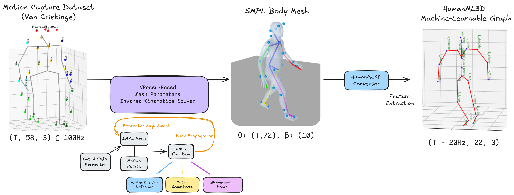
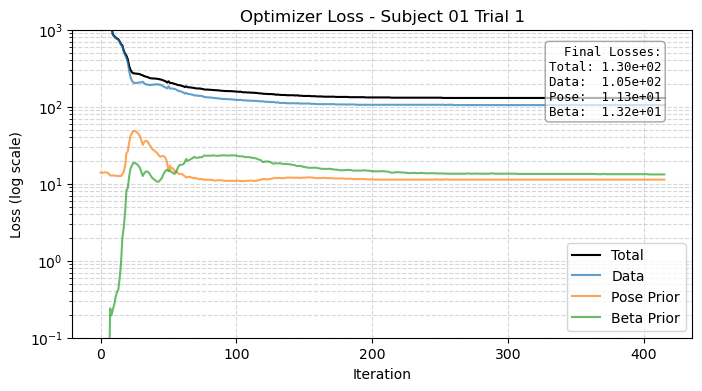
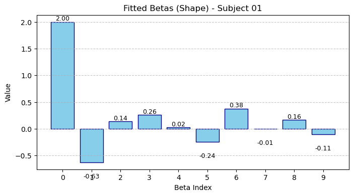

Data Processing Pipeline
Transforming raw optical marker data into a format suitable for diffusion model training requires a carefully designed multi-stage pipeline. We convert the Van Criekinge marker recordings into the HumanML3D 263-dimensional feature representation through SMPL body-model fitting followed by feature extraction, addressing defects from legacy motion-capture data along the way.

Multi-stage conversion from raw C3D marker recordings to HumanML3D-compatible features.
| Stage | Representation | Shape | Key Operation |
|---|---|---|---|
| 0 | Raw C3D marker trajectories | (T, ~60, 3) @ 100 Hz | Vicon optical capture |
| 1 | SMPL parametric body model | θ: (T, 72), β: (10,), t: (T, 3) | VPoser-regularized marker fitting with artifact correction |
| 2 | HumanML3D skeleton (22 joints) | (T20Hz, 22, 3) | Coordinate frame change + temporal resampling (100→20 Hz) |
| 3 | HumanML3D feature vector | (T−1, 263) | Root trajectory + joint positions/velocities/rotations + foot contacts |
The pipeline achieves an overall 85× compression from raw marker data to training features while preserving clinically relevant kinematic cues. Motion is represented in a body-centered coordinate frame, making the learned representations invariant to global position and enabling better generalization across environments.
A key implementation fix involved correcting a coordinate transformation bug in the C3D-to-SMPL stage (Vicon Z-up → body-centered Y-up), which previously introduced systematic lean and descent artifacts that were incorrectly filtered as noise.
SMPL Fitting & Artifact Correction
Fitting SMPL to optical marker data introduces systematic artifacts that, if uncorrected, corrupt the age-related kinematic signal. We adapt VPoser's prior-space optimization with a two-stage L-BFGS schedule: a shape-free stage that recovers a local minimum in pose, followed by a shape-and-prior refinement stage. This staging ensures individual biomechanical details are preserved before generic pose priors take over.

Left: crouch-walking artifact induced by standard pose priors. Middle: our optimized pipeline recovers a natural posture. Right: mesh inflation artifact from naive marker mapping.

Multi-stage VPoser fitting loss curves, showing rapid convergence in both the shape-free and shape-refinement stages.

SMPL shape parameters (β) across subjects. Outlier values corresponding to inflated meshes are suppressed by the staged fitting prior.